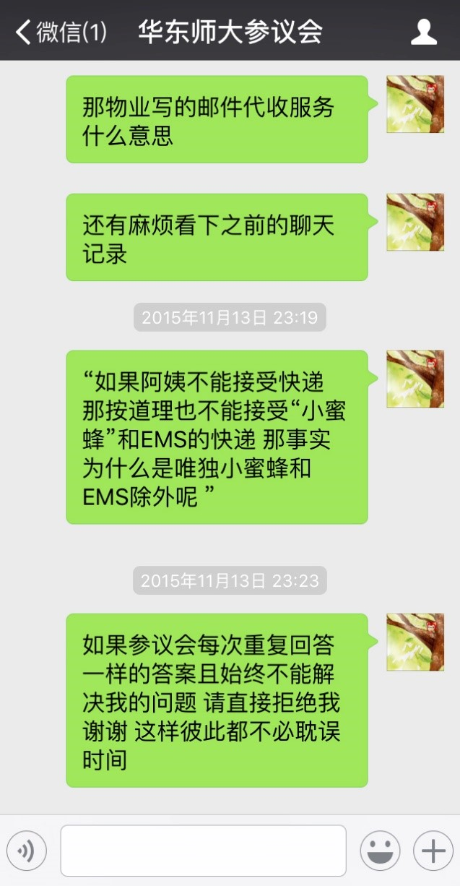

看到这条推送的时候，
我想好好整理我与快递的事儿。

因为是个人体验与切身感受，
我只能保证真实，
然后尽可能客观，
如有言辞不当，还请多多指教。
正如柴静在《穹顶之下》中说，那是她与雾霾的私人恩怨。
我想，我叙述的也只是我与快递的私人恩怨吧。
故事从（这学期）开学前一天说起，当我坐在从虹桥火车站回校的公交上，京东快递员给我打了个电话，说让我今晚几点前去大活（大学生活动中心）取快递，语气肯定，我想着自己赶回校的时间挺紧张，况且一身的行李，不想当天去取快递，我就说能否隔日再取，或者麻烦送到寝室楼下。
“可以吗？” 我客气地问道，
他不耐烦地回了句 “快递又不重，你一个男生来拿不就行了么”。
我竟哑口无言，挂了电话，我越想越不对劲。京东快递员，先前每次都让我去大活自提，自提是不收费的，而我选择的是京东快递服务的，是需要付运费or满79元减免运费的，那这运费岂不是白白送给了这帮没送货的快递员。虽然我一直都清楚这事，但每每想到快递员大多辛苦，上个学期，我也就次次去乖乖自提了，权当是送些快递费咯。但这次，他们的态度却不同于以往，变得毫不客气。想到这，我心里窜起怒火——自己一直以来对他们的理解与宽容被他们认为是理所应当——他们认为他们压根不需要“送”快递。我立即联系了京东客服，说明情况，客服表示快递应当负责送到寝室楼下，并帮我联系快递人员。
那天傍晚，下着雨，我还是赶到了大活，我没有找到他们以往的自提点，于是给快递员打了电话，这次注意了自己的口气，刻意地表现得不那么客气，
我问他，“京东快递究竟是否负责送到楼下？快递服务比自提多出的运费用在了哪儿？给了谁？”
他好像被我一连串的疑问吓到了，就和我解释说人手不够，以后可以送到楼下，我说那好，今天我去自提，你说的话我都录音了。（其实我并没有录音）
第二天，快递又打了个电话给我，估摸着是被客服联系了，言语中有些慌张，他一再强调自己没有说“不送到楼下”这几个字，我细细一想，好像确实，他只反问我不能来自提么…… 我无奈地笑说你确实没说这几个字。
我又和他解释说“我向客服反映的另一方面也是希望给你们增加人手啊”
他回答说”有人的，那人昨天在放假。”
所以，这话的意思是:他们的人手本来是够的，而因为取快递的我们，都甘愿把快递变自提，他们就可以多一个人放假吗？
通话结束，京东客服很快给我发了条短信“您反映的问题已解决^_^”
对于此事，我想说，我不强求快递员把我的五个包裹送到楼下，上学期无数个包裹都是我自提的，我可以”理解“快递员的辛苦，但这次快递员不友好的态度着实让我有些不爽——他压根没有给我同样的“理解”。包裹不重是实话，但五个包裹堆在一起拿回去也不那么容易，另一方面我没有时间——奔波一天从家里赶到学校，我想回寝室安顿安顿。更重要的是我选择的是快递服务，你没有把服务做到位，却不耐烦地指责我有义务去拿所谓不重的包裹。回想去年那个雨天，我一手撑着伞，双手拎着两箱牛奶和一些杂物回寝室，那感觉真是糟透了……
导火索是他不和善的态度，而背后的原因是，我购买的服务遭到快递员无理，无情的无视。
而可悲的是大多数人的包容，却成了纵容少数快递员懒惰的缘由。
时间推后到军训期间，快递员让我下午3点半到6点期间去取快递，我们军训5点半结束，我的习惯是赶快回宿舍楼洗个澡，然后吃个饭七点前赶去教学楼排练唱歌，晚上再整理两篇通讯稿。所以内心非常不愿意不洗澡去取快递……于是有了如下的对话：

最让我反感的几句话是，他语音说自己是做学生兼职的，他做快递很辛苦，请我理解……
所以这意思是，我要去牺牲自己，帮助他完成他原本应当独立完成的工作么，他明明清楚有学生取快递取哭了，都不能延长半小时等下我们，以此表达他对我们的“理解”么。
还说什么“互相理解”，怕是只求理解而不去理解吧。
无奈我只好找学姐帮我取快递了。
然后情况是这样的↓
有一天，宿管阿姨突然在一楼贴了个“友情提示”：
这告示意味着，一直以来阿姨能帮忙收一号店快递的好景，一去不复返了。
而这学期以来，满课的我，靠着（能送到楼下的）一号店快递才活到了现在啊，接下来的日子可怎么活………
但是，华师有个“快递无忧”（专门帮人取快递送到楼下，科创项目，面向学生收费），阿姨虽说快递一律不收，但是仍然代收EMS和快递无忧。
这意味着：我每次想让快递送到楼下，以后要去找快递无忧，然后多交￥2+咯？那些本来快递员就可以送到寝室楼下的快递，以后就得自己多花钱咯？
“这是不是不公平啊！”
有次碰到一号店的快递小哥，他在派送快递时，和楼管阿姨交流说到这事，楼管阿姨表示很无奈，她说她们也只是受学校物业要求，她本人是愿意接受快递的。
那么，问题来了。
学校为啥这样做呢，为什么不能让快递更方便地到达宿舍，变相增加我们的消费成本呢。
尤其是物业公司，明明在寝室楼下的提供服务列表中写出了“邮件代收服务”，这包括代收快递么，是我哪儿理解错了吗？
于是，我想起了“不把民主交给空想”的华师参议会：
我与参议会，长达近一个月的对话从此开始：（微信对话未作删减，以下为我手机显示的完整版）
第一次提问：
咦？不是说好的48小时回复嘛？
我估计一定是我的问题太多了，他们还在认真研究，认真联系相关人员，嗯嗯，不急……
然而：
两周后，我又开始发问了。

看起来说的挺有道理，但我的疑问又来了。
（小蜜蜂代指“快递无忧工作人员”，亦可代指“快递无忧”）
然后一天过去了……
我的心情是这样的↓
天啦噜又是这个自动回复2333
终于！
啊啊啊参议会好有效率，
都开始帮我联系后勤部啦。
期待回复。
然后，两天过去了
五天过去了……
六天过去了！还没有动静= =
我又问了：
啊喂喂喂！怎么和我上次回答的内容基本一样，根本没有解答我的困惑啊……
说实话，我等了这么久参议会还敷衍我……
（悲伤）

终于在一天之后，

嗯嗯，不错
我回复：
故事似乎画上了圆满的句话，
经过这几次漫长的等待，
我也累了。
要不是同学正好在调查快递，
我恐怕早已放弃追问。
但是，后勤部的电话迟迟没有到来Orz……
于是……
（我觉得自己问的，多得都有些不好意思了……）
这次自动回复之后很快有了响应……
（作为玩了半年多微信后台的人，我知道他们都没有把我的消息进行收藏……）
（作为一个本学期修31学分的人，我也在准备期中考试也很忙，你们之前让我等了那么长时间，这次能给个了结好么）
然后，
两三天后，
没有电话，没有回复。
直到20+天以后的今天，我的同学依然没有接听到后勤部的电话。
我也没有从参议会那边得到任何新的消息。
在等待参议会答复的日子里，
我又想起了它↓
于是，我在学生校长助理网站上，留了言，欣慰的是很快得到了回复：
值得一提的是，后勤保障部的老师表示：
“据我了解宿舍楼均未写‘提供邮件代收服务’。”
喂喂喂！连后勤部自己都不知道自己在宿舍楼内写了“邮件代收”服务么。
那么，我再放一遍图：

我非常能够理解宿管阿姨工作繁忙，但这和物业承诺的服务并不矛盾。
物业公司完全可以聘请多个宿管阿姨。即使这样是不可行的，也请不要做出无法兑现的承诺，好吗？
另外，如果禁收快递是为了规范管理及宿舍环境的整洁，请一视同仁所有的快递，不要有所例外，OK？
此外，值得注意的是，
后勤部老师提到：“中心管辖的宿舍并没有禁止快递不能送到宿舍楼下，只是要求快递送到楼下的同时是有学生接收的。”
然而在八号楼后面的菜鸟驿站，我询问起圆通，汇通等快递员为何不能把快递送到宿舍楼下时，菜鸟驿站工作人员表示学校不让送到楼下。“不都是自己来拿的么”，她这样说道。
本着求根问底的求实态度，我决定和快递死磕到底。
因为，
双十一后，我的汇通快递在菜鸟驿站找了好几次都找不到了……
为了体验快递无忧的服务，我决定付费让他们帮我取这个快递，
从13日发起订单，我联系小蜜蜂数天，每天他们都告诉我没有取到or不清楚是否取到。
到了17号，我决定和菜鸟驿站再沟通沟通，他们让我留下快递单号，终于在18号，菜鸟驿站负责人员找到了我的快递。
于是，快递无忧在18号帮我取消了停留5天的订单。
期间，我也从贴吧等社交媒体了解到“汇通的快递找不到”并非个案，我向汇通快递公司客服反映过情况之后，快递员也联系了我，他表示无奈，很无奈，非常无奈……
但还好，这个12日被签收的快递在18号还是送到了我的手上，在双十一给快递公司带来的巨大压力的同时，我应当对他们的服务表现予以理解，因而一些不让人满意的细节不予赘述。
快递是这几年来发展迅猛的行业，而这种速度往往会带来一系列的问题，不论是快递送货上门的流程细节，还是与之相匹配的收货单位的软硬件。种种方面都有太多值得完善的地方。而小小的快递调查在细节上却反映了更多的大问题。
不论是“宿管阿姨先前接受快递代收”与“现在声明拒收所有快递”相对比，
还是“虽说拒收所有快递”又“有所例外”，
还是“宿舍楼下标注清晰的邮件代收服务”和“学校后勤部表示没有‘邮件代收’相矛盾”，
还是”后勤部表示并没有禁止快递不能送到宿舍楼下“与”部分快递员推脱送到寝室楼下“相对比，
还是”快递员表述“与”快递公司客服表述“相矛盾。
我不知道这一串事有多少人牵扯其中，又有多少原因隐藏其中。
但我知道我以后很可能不会再追问一些事了，
这一次的追问，
已经让我失去了所有的期望，所有的耐心。
似乎应该给故事写个结局。
但是，我竟发现写不出“现状有什么大的变化”。
也许是进展有些慢，也许是更多的改进在悄然无声地发生着。
不如去乐观地相信，明天才是更好的故事结局？
可惜，今天的我反成了悲观的人。
截至2017年8月，微信稿浏览人数：3461；点赞：127。
（发布时仅有4人接受到推送……其中一个是我，还有一个是广告商……真心感谢朋友圈分享233）
文章链接：
微信推送原文
后记：
后勤部老师于文章发表后第一个工作日，通过微信后台留言积极地与我取得联系。随后，后勤部召开会议并欢迎我出席商讨，再过了一段时间之后，后勤部联系菜鸟驿站制定一系列措施。
后续结果可参看微信稿：快递丨八号楼菜鸟驿站回归
另外，针对参议会前后两别的态度必须吐槽：P
没有履行自身职责，在快递问题座谈会上不代表学生建言献策，阻挠学生诉苦提建议的参议会：）
总是第一时间冲当好人角色给大家报喜：）
座谈会上后勤部老师和菜鸟驿站负责人说的那句“我不知道学生取快递这么麻烦”那句话我印象深刻：）
我不知道参议会说的那句它是“同学与校方之间的桥梁”的“桥梁”在哪，长什么样：）
PS：如需引用，还望注明出处。